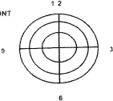

<div class="mapping-chart-container">
    <!-- front -->
    <div class="circular-section">
        <div class="circular-container">
            

            <svg class="circular-overlay" viewBox="0 0 200 200">
                <!-- Center circle (innermost) -->
                <circle cx="100" cy="100" r="15" class="ring center"
                    [class.marked]="isCircularSectionMarked('front', 'center')"
                    [attr.fill]="getCircularSectionColor('front', 'center')"
                    (mousedown)="onCircularSectionClick('front', 'center', $event)" />

                <!-- 12 o'clock quarter (3 rings) -->
                <path [attr.d]="getArcPath(100, 100, 30, -90, 0)" class="ring inner"
                    [class.marked]="isCircularSectionMarked('front', '12-inner')"
                    [attr.fill]="getCircularSectionColor('front', '12-inner')"
                    (mousedown)="onCircularSectionClick('front', '12-inner', $event)" />
                <path [attr.d]="getRingArcPath(100, 100, 30, 60, -90, 0)" class="ring middle"
                    [class.marked]="isCircularSectionMarked('front', '12-middle')"
                    [attr.fill]="getCircularSectionColor('front', '12-middle')"
                    (mousedown)="onCircularSectionClick('front', '12-middle', $event)" />
                <path [attr.d]="getRingArcPath(100, 100, 60, 90, -90, 0)" class="ring outer"
                    [class.marked]="isCircularSectionMarked('front', '12-outer')"
                    [attr.fill]="getCircularSectionColor('front', '12-outer')"
                    (mousedown)="onCircularSectionClick('front', '12-outer', $event)" />

                <!-- 3 o'clock quarter (3 rings) -->
                <path [attr.d]="getArcPath(100, 100, 30, 0, 90)" class="ring inner"
                    [class.marked]="isCircularSectionMarked('front', '3-inner')"
                    [attr.fill]="getCircularSectionColor('front', '3-inner')"
                    (mousedown)="onCircularSectionClick('front', '3-inner', $event)" />
                <path [attr.d]="getRingArcPath(100, 100, 30, 60, 0, 90)" class="ring middle"
                    [class.marked]="isCircularSectionMarked('front', '3-middle')"
                    [attr.fill]="getCircularSectionColor('front', '3-middle')"
                    (mousedown)="onCircularSectionClick('front', '3-middle', $event)" />
                <path [attr.d]="getRingArcPath(100, 100, 60, 90, 0, 90)" class="ring outer"
                    [class.marked]="isCircularSectionMarked('front', '3-outer')"
                    [attr.fill]="getCircularSectionColor('front', '3-outer')"
                    (mousedown)="onCircularSectionClick('front', '3-outer', $event)" />

                <!-- 6 o'clock quarter (3 rings) -->
                <path [attr.d]="getArcPath(100, 100, 30, 90, 180)" class="ring inner"
                    [class.marked]="isCircularSectionMarked('front', '6-inner')"
                    [attr.fill]="getCircularSectionColor('front', '6-inner')"
                    (mousedown)="onCircularSectionClick('front', '6-inner', $event)" />
                <path [attr.d]="getRingArcPath(100, 100, 30, 60, 90, 180)" class="ring middle"
                    [class.marked]="isCircularSectionMarked('front', '6-middle')"
                    [attr.fill]="getCircularSectionColor('front', '6-middle')"
                    (mousedown)="onCircularSectionClick('front', '6-middle', $event)" />
                <path [attr.d]="getRingArcPath(100, 100, 60, 90, 90, 180)" class="ring outer"
                    [class.marked]="isCircularSectionMarked('front', '6-outer')"
                    [attr.fill]="getCircularSectionColor('front', '6-outer')"
                    (mousedown)="onCircularSectionClick('front', '6-outer', $event)" />

                <!-- 9 o'clock quarter (3 rings) -->
                <path [attr.d]="getArcPath(100, 100, 30, 180, 270)" class="ring inner"
                    [class.marked]="isCircularSectionMarked('front', '9-inner')"
                    [attr.fill]="getCircularSectionColor('front', '9-inner')"
                    (mousedown)="onCircularSectionClick('front', '9-inner', $event)" />
                <path [attr.d]="getRingArcPath(100, 100, 30, 60, 180, 270)" class="ring middle"
                    [class.marked]="isCircularSectionMarked('front', '9-middle')"
                    [attr.fill]="getCircularSectionColor('front', '9-middle')"
                    (mousedown)="onCircularSectionClick('front', '9-middle', $event)" />
                <path [attr.d]="getRingArcPath(100, 100, 60, 90, 180, 270)" class="ring outer"
                    [class.marked]="isCircularSectionMarked('front', '9-outer')"
                    [attr.fill]="getCircularSectionColor('front', '9-outer')"
                    (mousedown)="onCircularSectionClick('front', '9-outer', $event)" />
            </svg>
        </div>
    </div>

    <!-- tank (unchanged) -->
    <div class="image-container">
        

        <div class="grid-overlay" [class.show-grid]="showGrid" [class.readonly]="readonly"
            [style.grid-template-columns]="'repeat(' + gridCols + ', 1fr)'"
            [style.grid-template-rows]="'repeat(' + gridRows + ', 1fr)'" (mousedown)="startDrawing($event)"
            (mousemove)="draw($event)" (mouseup)="stopDrawing()" (mouseleave)="stopDrawing()"
            (touchstart)="startDrawing($event)" (touchmove)="draw($event)" (touchend)="stopDrawing()"
            (touchcancel)="stopDrawing()">

            @for (cell of cells; track cell; let index = $index) {
            <div class="grid-cell" [class.marked]="isCellMarked(index)" [class.disabled-cell]="isDisabledCell(index)"
                [ngStyle]="getCellBackgroundStyle(index)" [attr.data-index]="index"
                (mousedown)="!isDisabledCell(index) && $event.preventDefault()"
                (touchstart)="!isDisabledCell(index) && $event.preventDefault()">

                @if (getCellMark(index)?.style?.type === 'shape') {
                <div class="shape-overlay" [class.shape-circle]="getShapeClass(index) === 'circle'"
                    [class.shape-triangle]="getShapeClass(index) === 'triangle'"
                    [class.shape-square]="getShapeClass(index) === 'square'"
                    [class.shape-cross]="getShapeClass(index) === 'cross'"
                    [class.shape-diagonal]="getShapeClass(index) === 'diagonal'"
                    [style.background-color]="getShapeColor(index)">
                </div>
                }
            </div>
            }
        </div>
    </div>

    <!-- rear -->
    <div class="circular-section">
        <div class="circular-container">
            

            <svg class="circular-overlay" viewBox="0 0 200 200">
                <!-- Center circle (innermost) -->
                <circle cx="100" cy="100" r="15" class="ring center"
                    [class.marked]="isCircularSectionMarked('rear', 'center')"
                    [attr.fill]="getCircularSectionColor('rear', 'center')"
                    (mousedown)="onCircularSectionClick('rear', 'center', $event)" />

                <!-- 12 o'clock quarter (3 rings) -->
                <path [attr.d]="getArcPath(100, 100, 30, -90, 0)" class="ring inner"
                    [class.marked]="isCircularSectionMarked('rear', '12-inner')"
                    [attr.fill]="getCircularSectionColor('rear', '12-inner')"
                    (mousedown)="onCircularSectionClick('rear', '12-inner', $event)" />
                <path [attr.d]="getRingArcPath(100, 100, 30, 60, -90, 0)" class="ring middle"
                    [class.marked]="isCircularSectionMarked('rear', '12-middle')"
                    [attr.fill]="getCircularSectionColor('rear', '12-middle')"
                    (mousedown)="onCircularSectionClick('rear', '12-middle', $event)" />
                <path [attr.d]="getRingArcPath(100, 100, 60, 90, -90, 0)" class="ring outer"
                    [class.marked]="isCircularSectionMarked('rear', '12-outer')"
                    [attr.fill]="getCircularSectionColor('rear', '12-outer')"
                    (mousedown)="onCircularSectionClick('rear', '12-outer', $event)" />

                <!-- 3 o'clock quarter (3 rings) -->
                <path [attr.d]="getArcPath(100, 100, 30, 0, 90)" class="ring inner"
                    [class.marked]="isCircularSectionMarked('rear', '3-inner')"
                    [attr.fill]="getCircularSectionColor('rear', '3-inner')"
                    (mousedown)="onCircularSectionClick('rear', '3-inner', $event)" />
                <path [attr.d]="getRingArcPath(100, 100, 30, 60, 0, 90)" class="ring middle"
                    [class.marked]="isCircularSectionMarked('rear', '3-middle')"
                    [attr.fill]="getCircularSectionColor('rear', '3-middle')"
                    (mousedown)="onCircularSectionClick('rear', '3-middle', $event)" />
                <path [attr.d]="getRingArcPath(100, 100, 60, 90, 0, 90)" class="ring outer"
                    [class.marked]="isCircularSectionMarked('rear', '3-outer')"
                    [attr.fill]="getCircularSectionColor('rear', '3-outer')"
                    (mousedown)="onCircularSectionClick('rear', '3-outer', $event)" />

                <!-- 6 o'clock quarter (3 rings) -->
                <path [attr.d]="getArcPath(100, 100, 30, 90, 180)" class="ring inner"
                    [class.marked]="isCircularSectionMarked('rear', '6-inner')"
                    [attr.fill]="getCircularSectionColor('rear', '6-inner')"
                    (mousedown)="onCircularSectionClick('rear', '6-inner', $event)" />
                <path [attr.d]="getRingArcPath(100, 100, 30, 60, 90, 180)" class="ring middle"
                    [class.marked]="isCircularSectionMarked('rear', '6-middle')"
                    [attr.fill]="getCircularSectionColor('rear', '6-middle')"
                    (mousedown)="onCircularSectionClick('rear', '6-middle', $event)" />
                <path [attr.d]="getRingArcPath(100, 100, 60, 90, 90, 180)" class="ring outer"
                    [class.marked]="isCircularSectionMarked('rear', '6-outer')"
                    [attr.fill]="getCircularSectionColor('rear', '6-outer')"
                    (mousedown)="onCircularSectionClick('rear', '6-outer', $event)" />

                <!-- 9 o'clock quarter (3 rings) -->
                <path [attr.d]="getArcPath(100, 100, 30, 180, 270)" class="ring inner"
                    [class.marked]="isCircularSectionMarked('rear', '9-inner')"
                    [attr.fill]="getCircularSectionColor('rear', '9-inner')"
                    (mousedown)="onCircularSectionClick('rear', '9-inner', $event)" />
                <path [attr.d]="getRingArcPath(100, 100, 30, 60, 180, 270)" class="ring middle"
                    [class.marked]="isCircularSectionMarked('rear', '9-middle')"
                    [attr.fill]="getCircularSectionColor('rear', '9-middle')"
                    (mousedown)="onCircularSectionClick('rear', '9-middle', $event)" />
                <path [attr.d]="getRingArcPath(100, 100, 60, 90, 180, 270)" class="ring outer"
                    [class.marked]="isCircularSectionMarked('rear', '9-outer')"
                    [attr.fill]="getCircularSectionColor('rear', '9-outer')"
                    (mousedown)="onCircularSectionClick('rear', '9-outer', $event)" />
            </svg>
        </div>
    </div>
</div>